第八章 无穷小之谜
一尺之棰，日取其半，万世不竭。
——庄子
“无穷小”和“极限”的思想，无论是中国还是外国，很早以前就有人涉及过。
2000多年前，在中国古代文化名著《庄子》里，就曾经迸发出极限思想的火花。《庄子》中说：“一尺之棰，日取其半，万世不竭。”一根一尺长的木棍，每天将其对分，可以永远继续下去；木棍的长度会不断缩短，会无限接近于0，但永远不会等于0，0是它的极限。
在古希腊，有“勇士追不上乌龟”的奇谈。
这些极限思想尽管非常朴素，但帮助当时的人们解决了一些求积的问题。如曲线包围的面积，是靠把它分割成无穷多的三角形或矩形才计算出来的。其中最有名的例子是圆面积的计算和抛物线弓形面积的计算。
后来，人们在认识无穷小和极限的过程中发现，利用它们能解决很多问题。许多无理数，像
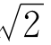
，π，它们的计算只能用有理数一步一步逼近，也就是通过极限过程才能掌握。牛顿和莱布尼茨创立微积分，用崭新的数学方法解决了一大批物理学和几何学上的问题。这中间，无穷小量是立了汗马功劳的。
但是，直到牛顿死后200多年，数学家才揭开无穷小量的真面目，弄明白了极限过程的来龙去脉。
一说起极限，说起无穷小，有的同学就会产生一种不可捉摸的感觉，好像是平原上远处的地平线，可望而不可即。不像证平面几何题、解一次代数方程式那样，有根有据，放心大胆。这并不奇怪，微积分建立初期，许多数学家也有这种感觉。
现在，关于无穷小和极限，完全可以讲得清清楚楚、毫不含糊了。
让我们来试一试。
你已经知道什么叫无穷数列了吧。无穷数列就是排好了顺序的一串数：a1，a2，a3，…，an，an＋1，…对应于每个自然数n，有一个实数an，an叫做数列的第n项。
如果有一个正数A，它比每个｜an｜都大，就说数列{an}有界；否则，就说它无界。
例如，数列
1，0，1，0，1，0，1，…
sin1，sin2，sin3，sin4，…，sinn，…
都是有界的。而
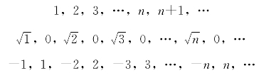
都是无界的。
如果数列中的数一个比一个大，或至少相等，就说它是递增的。也就是说，满足a1≤a2≤a3≤…≤an≤an＋1≤…的数列，叫做递增的。例如，an＝n，或an＝1－
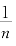
，都是递增的。有界与无界，是不是递增，这些概念都是清晰的。理解了这一点，接下去我们就要定义什么是无穷小列了：
[定义1] 设{an}是无穷数列[1]。如果有一个递增而无界的正数列Ln，使｜αn｜≤
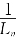
，就称{αn}是无穷小列。这个定义是毫不含糊的，用它可以直接验证一些数列是不是无穷小列。
[例1] 已知
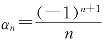
，证明数列{αn}是无穷小列。证明 因为可取Ln＝n，{Ln}是递增无界的。而
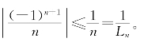
由定义1可知，{αn}是无穷小列。
[例2] 求证：数列{qn}，当｜q｜＜1时是无穷小列。
证明 因为｜q｜＜1，所以
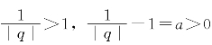
。取Ln＝na，则{Ln}是递增无界的，而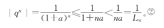
由定义1可知，当｜q｜＜1时{qn}是无穷小列。
[例3] 求证：数列{an}：1，0，
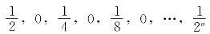
，0，…是无穷小列。证明 取{Ln}：
1，1，2，2，4，4，8，8，…，2n，2n，…
{Ln}显然是递增无界的。易验证｜αn｜≤
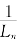
。证毕。[例4] 取αn＝
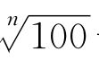
－1，证明{αn}是无穷小列。证明 由于
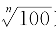
＞1，所以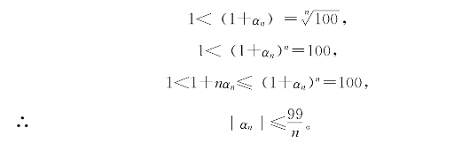
于是，只要取Ln＝
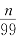
，显然{Ln}是递增无界的。易验证｜αn｜≤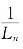
。证毕。应用这个定义，还可以方便地证明关于无穷小列运算的一系列性质。
无穷小列的性质：
（1）若{αn}是无穷小列，改变{αn}中的某有限项之后，它仍是无穷小列。
（2）若{αn}、{βn}都是无穷小列，{αn＋βn}，{αn－βn}也是无穷小列。
（3）若{αn}是无穷小列，{An}是有界数列，则{αnAn}也是无穷小列。
（4）若{αn}是无穷小列，｜βn｜≤｜αn｜，则{βn}也是无穷小列。
（5）若{αn}是无穷小列，从{αn}中取出无穷多的一部分，按原来次序排成的数列（这叫做{αn}的子列）也是无穷小列。
（6）把{αn}的次序打乱重排得到数列{βn}。若{αn}是无穷小列，则{βn}也是无穷小列。
（7）若{αn}的各项相等，{αn}是无穷小列，则必有
α1＝α2＝…＝αn＝…＝0。
（8）无穷小列是有界列。
这些性质证起来都不难，作为练习题，请读者自己证明。
有了无穷小列的概念，数列极限的概念就容易建立了。
[定义2] a是一个实数，{an}是无穷小列，若an＝a＋αn，则{an}叫做以a为极限的数列，记作
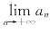
＝a。你看，有极限的数列不是别的，不过是常数列再加上个无穷小列而已！也就是说，如果{an－a}是无穷小列，那么{an}的极限就是a。
利用这个定义，能够求一些简单的极限。
[例5] 求数列
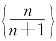
}的极限。解
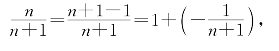
因为－
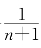
是无穷小列，所以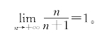
[例6] 求数列
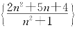
的极限。解
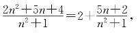
因为
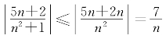
，而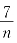
是无穷小列，那么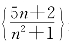
是无穷小列，所以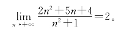
[例7] 求数列
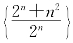
的极限。解
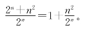
我们来分析一下，看看
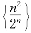
是不是无穷小列。根据二项式定理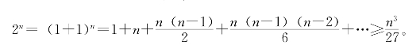
（这个不等式是这样证的：当n＝1，2，3时，右端不大于1，当然对。当n≥4时，（n－1）（n－2）≥）
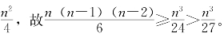
这样就有
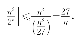
于是
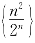
}是无穷小列，所以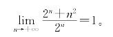
[例8] 求证
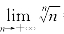
＝1。分析 按定义，只要证明
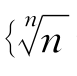
－1}是无穷小列就可以了，我们用类似于例4的方法来证明。证明 记
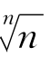
－1＝αn，则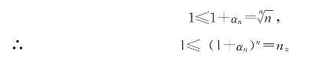
用二项式定理展开得
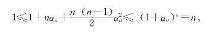
当n＝1时，αn＝0；n≥2时，（n－1）≥
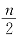
。于是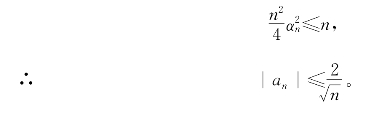
因为
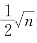
是递增无界的，所以{αn}是无穷小列。证毕。这样求极限，毕竟还有点麻烦。再建立一些关于数列极限的运算规律就方便得多了。利用无穷小列的性质和数列极限的定义，可以毫不费事地推出下列规律。
关于数列极限的运算规律：
（1）若{an}以a为极限，改变{an}中的某有限项之后，它仍以a为极限。
（2）若{an}，{bn}分别以a，b为极限，则有{an±bn}以（a±b）为极限，{an·bn}以a·b为极限。
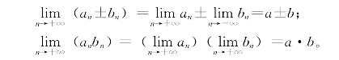
（3）若{an}以a为极限，a≠0，则
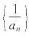
}以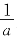
为极限。（4）若{an}，{bn}都以a为极限，an≤cn≤bn对一切n成立，则{cn}也以a为极限。
（5）若{an}以a为极限，则{an}的无穷子列也以a为极限。
（6）若{an}以a为极限，把{an}打乱重排后得到{bn}，则{bn}也以a为极限。
（7）若{an}以a为极限，又以b为极限，则有a＝b。
（8）有极限的数列是有界列。
这些性质的证明，留作练习题。
利用以上性质，求极限就方便多了。
[例9] 求数列{
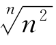
}的极限。分析 在例8中我们求出了
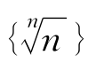
的极限为1。是不是可以用类似方法求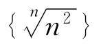
的极限呢？当然也可以，只要利用二项式定理展开到第4项就可以了。但用不着那样麻烦，利用极限运算性质（2），就可得到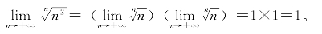
用类似的方法，可以证明
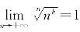
。这里k是任意实数。[例10] 求证
证明 因为
把1看成常数列1，1，1，…利用极限运算性质（4），可知
求极限，还有不少巧妙的方法，如利用数列各项之间的递推关系，先证明极限满足一个方程式，再把它解出来。
[例11] 已知
求数列{an}的极限。
解 因为an和an＋1之间有关系
如果{an}有极限a，根据极限的运算性质（2），可得
但{an＋1}和{an}的极限是一样的，都是a，所以
a2＝a＋2，
解出a＝2或－1。a＝－1不合理，所以如果{an}有极限，必定以2为极限。
[例12] 设
求{an}的极限。
解 类似上题的方法可知，如果{an}有极限a，那么
解出正根a＝。所以如果{an}有极限，必定以为极限。
这两个题，都要先假定{an}的极限存在，否则就不能应用极限的运算性质。那么，这两个极限是不是存在呢？确实是存在的。利用一个重要的基本定理——递增（减）有界数列必有极限——可以证明上述两个极限的存在。这个基本定理，可以利用实数的构造性定义来证明（定义实数是有理数的分割，或是无穷小数，等等），也可以利用实数公理证明，也可以干脆把它作为一条实数公理，用它代换上一章所说的最后一条“完备公理”。
有的同学觉得，没有必要先证明上述两例极限的存在。如果把它们的极限求出来，不就说明极限存在吗？请看下例。
[例13] 设
a1＝1，a2＝1＋2＝3，a3＝1＋2×3＝7，
a4＝1＋2×7＝15，…，an＋1＝1＋2an，
求{an}的极限。
解 设{an}的极限为a，利用
an＋1＝1＋2an，
两端取极限，得a＝1＋2a，所以a＝－1。
这当然错了！错的原因，是毫无根据地假定了极限的存在。
练习题八
1.从本章的定义出发，证明无穷小列的那些基本性质。
2.利用无穷小列的性质，推出数列极限的运算规律。
3.你能利用实数公理来证明“递增有界数列必有极限”这个命题吗？
4.求证：数列
的极限是方程式x2＋x＝1的正根，即0.618…
5.证明例11中{an}的极限存在。
6.求证：若{an}，{bn}都以a为极限，把两列数排成一列之后，新数列的极限仍是a。
7.证明例12中{an}的极限存在。
8.求证：数列{αn}是无穷小列的充分必要条件是：任意给一个正数ε，在{αn}中只有有限项的绝对值大于ε。也就是说，只有有限个号码n1，n2，…，nk，使
｜αni｜＞ε（i＝1，2，…，k）。
【注释】
[1]用{αn}表示整个数列，αn表示它的第n项。